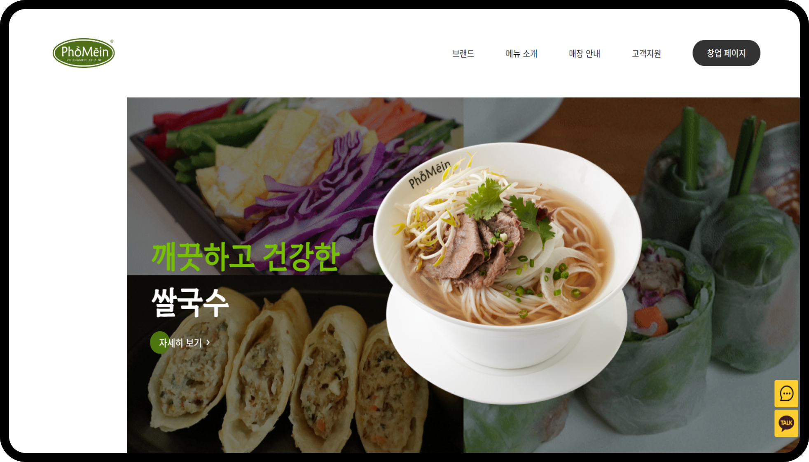
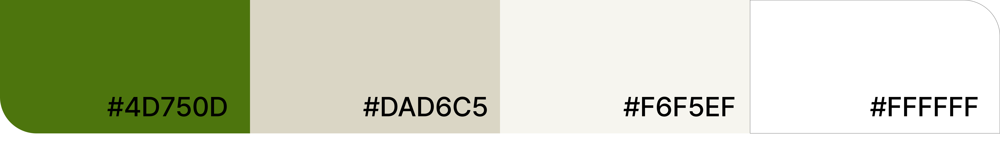

Phở Mēin
포메인 웹사이트 (Main Page)
- 2023.07.21 - 2023.07.26
- 개인 프로젝트 (100%)
- 리디자인 & 퍼블리싱


이번 프로젝트는 그동안 배운 JavaScript와 jQuery를 활용하여 포메인만의 전문성을 보여주는 것을 목표로 하였습니다.
가독성 있는 폰트를 사용하였고 여백을 이용하여 여러 이미지를 조화롭게 구성했습니다
대칭을 이루는 비슷한 콘텐츠를 동작을 실행시켜 지루하지 않게 구현했습니다
포메인의 색상은 돋보이고 포메인만의 전문성이 돋보일 수 있도록 리디자인 하고자 했습니다
2023.07.21 - 2023.07.26
100%
# 깔끔함 # 차별화 # 재해석
Hahmlet / Pretendard

flex, position을 이용한 레이아웃 구성
각 콘텐츠 별 특징에 따른 다양한 구성으로 사용자가 봤을 때 보다 흥미로움
JavaScript와 css animation을 이용하여 이미지 움직임 적용
스크롤 위치에 따른 nav 바 생성 변화 이벤트
각 영역 hover 시 영역의 width 값만 변경되는데 해당 영역에 위치한 이미지가 같이 움직이는 문제 발생
width:auto 와
transform: translate()
값으로 위치 조절 후 해결함
gif를 background: url()로 삽입한 후 linear-gradient(), background-blend-mode: multiply로 어두워지도록 하였으나 처음부터 어두운 상태인 문제점 발생
객체의 'load' 이벤트를 기다리는 이벤트 리스너를 설정, 이벤트 리스너 함수 내부에서 setTimeout 함수를 사용, setTimeout 함수는 지정한 시간이 경과한 후 특정 함수를 실행할 수 있게 해주고 setTimeout의 두 번째 인자는 함수가 실행되기 전의 지연 시간을 밀리초로 실행되도록 설정, 'brightness(0.5)'; 적용하여 요소의 밝기를 조절하여 문제를 해결함